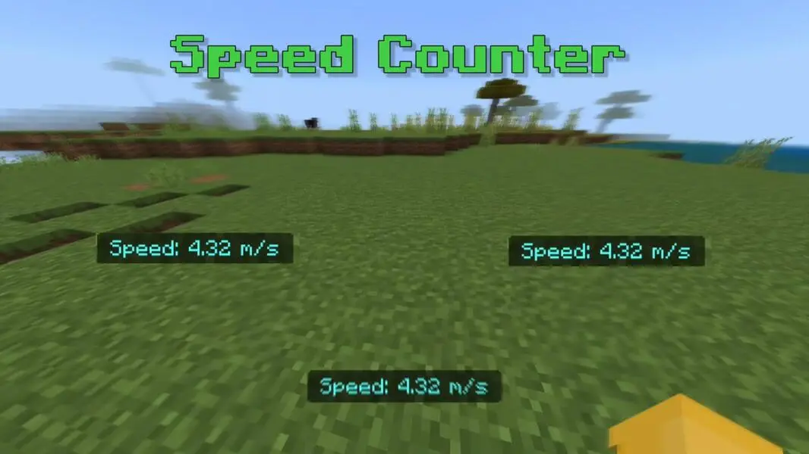

Speed Counter Add-on
 DOWNLOADSpeed Counter - Minecraft Bedrock Add-on
Speed Counter is an add-on for Minecraft Bedrock that displays the player's movement speed. This is a useful add-on for anyone who wants to track their pace while running, swimming, riding, or using the Elytra.
Feature:
- Display the speed directly on the screen using the Actionbar.

- mph: Suitable for those accustomed to the American measurement system.
- m/s: Standard measurement system.
Video Preview
Frequently Asked Questions (FAQ)
1. Does this add-on work in multiplayer mode?
Yes! The add-on will track the speed of each individual player without affecting the server's performance.
2. Does the add-on affect gameplay?
No. This is just a display add-on, it does not change the movement or core mechanics of Minecraft.
3. Can this add-on be used with another add-on?
Maybe! Speed Counter only displays speed and does not conflict with other add-ons.
4. Does it support platforms like Windows 10, iOS, Android?
Yes, this add-on works well on all devices running Minecraft Bedrock Edition.
5. Why do I need to watch ads and verify Captcha?
These add-ons are developed and advertised by me along with Captcha, helping me generate revenue to continue upgrading and improving the quality of the product. Thank you for your support!
Supported Minecraft Versions
- 1.21+